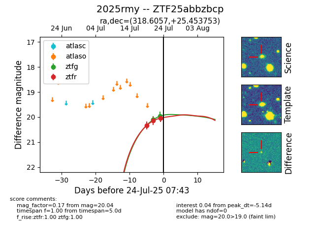

Target ZTF25abbzbcp at 2025-07-24 07:43, see:
FINK: fink-portal.org/ZTF25abbzbcp
Lasair: lasair-ztf.lsst.ac.uk/objects/ZTF25abbzbcp
ALeRCE: alerce.online/object/ZTF25abbzbcp
TNS: wis-tns.org/object/2025rmy
YSE: ziggy.ucolick.org/yse/transient_detail/2025rmy
alt names
ZTF25abbzbcp (ztf,fink)
2025rmy (tns,yse)
coordinates:
equatorial (ra, dec) = (318.6057,+25.45375)
galactic (l, b) = (73.3020,-15.87182)
photometry
last ztfg=19.96, ztfr=20.04
2 ztfg, 3 ztfr detections
